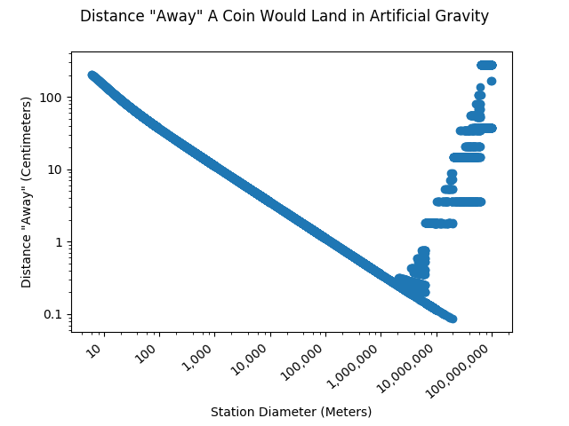
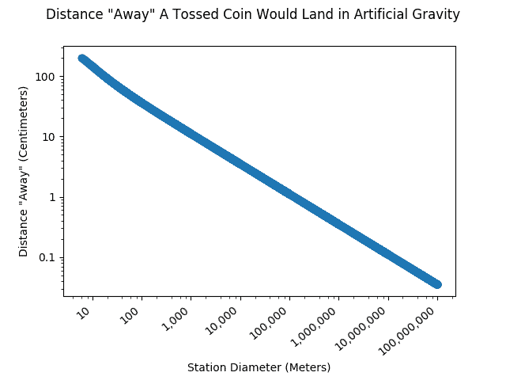

If you were to toss a coin on an artificial gravity space station, where would it end up? If you try my new computer model, you will discover that it won't land at your feet where you would expect it to. I created this React web app to demonstrate the Coriolis effect, which would be apparent in artificial gravity, or gravity produced by spinning. This model teaches a complicated Physics principle in a simple way.
I am very pleased with the result, the product of many months of work. This page is both a computer model and an article. The following text describes some of the steps I took to generate this model.
Coding goals
As I state in my article, the Coriolis effect is an effect of rotating environments (artificial gravity) that distorts objects' movement, causing objects to move to where you do not expect them. My goal was to take this complicated physics principle and simplify it so that anyone can understand it. I wanted to also quantify how "weird" each throw is with a simple number.
I wanted the model to be powerful enough to be able to render whatever movement a user wishes to model. With this objective, I hoped to make the effects of artificial gravity perfectly clear. Furthermore, I wanted the page to be compelling, clean, intuitive, understandable, beautiful, fast, resizable, mobile-friendly, and not glitchy.
Steps to produce the model
This model came about in several stages. The page started from a simple idea, though the final result is more sophisticated than what I had initially planned.
-
The first stage of this model was to calculate the landing position of the outer space coin toss, so I could quantify how "weird" the toss is. The model needed to compute these coordinates for the viewer. This page explains the math I used.
-
With the landing coordinates, I could calculate the distance the coin would land away from the person; this is the measurable result of the Coriolis effect. I wrote the math into Python code to generate a graph that shows the relationship between the diameter of the station and the "weirdness" of the throw produced by the Coriolis effect. These graphs assume the coin was tossed from four feet up to a total height of 7 feet.
-
I wanted to demonstrate what any throw would look like. I generated a series of points following the coin's movement, allowing me to plot these points on an HTML canvas element. These points needed to be in the thrower's reference frame. Again, here is the math I used to develop this portion of the project.
-
I wrote an article about the Coriolis effect. I wanted this article to be complete, understandable, informative, and entertaining.
-
I improved the model's user interface to make it clean and professional. For instance, I added intuitive logarithmic sliders so that it would be easy to change the throw's parameters.
Some things I encountered while coding
Here are some insights into the challenges I encountered while coding this webpage.
Insufficient Decimal Places
I discovered that an ordinary variable in Python or JavaScript, with fifteen decimal places, is not accurate enough to calculate the results that I wanted. These results were glitchy! I found a solution with the Decimal.js JavaScript library, which makes it possible to use longer decimals in Javascript. In Python, I made use of the Decimal package.
Here is my glitchy Python graph with the standard number of decimal places:

Now, with additional decimal places:

The Python code I wrote to generate these graphs can be found here.
A Hidden Feature: Querystrings
Just in case I want to demonstrate something about the Coriolis effect, I added the ability to open the model page with specific settings. Querystrings are extra modifiers at the end of your URL; it might look like this: http://coriolis-station.netlify.app/#&diameter=400.
Here are some of the possible querystrings one could use:
- diameter (&diameter=400): diameter of the station
- radius (&radius=5000): radius of the station
- percenttime (&percenttime=50): show the movement as slower or faster than reality
- startheight (&startheight=30): the height the movement starts from
- gravity (&gravity=50): percent of Earth's gravity on the floor
- speed (&speed=20): speed of the object
- angle (&angle=20): angle of the throw in degrees
- units (&units=m): either ft, feet, imperial, metric, meters, or m
- thrownUp (&thrownup=8): a hidden feature. Instead of specifying the angle and speed, you can simply tell it how high you would have thrown the object on Earth.
- statsMenu (&statsmenu=true): I can open the model with the statistics menu open. Possible values: either just "&statsMenu" or "&statsMenu=true".
- inputMenu (&inputmenu=false): I can open the model with the input menu open or closed. Note, this menu is already open by default in most views.
Logarithmic Sliders
I wanted to produce logarithmic sliders for the model's input. This way, it would be intuitive what ranges are acceptable. I found the logic I needed at this site.
My logarithmic ranges needed to include zero. The log of zero does not normally compute! My code uses an offset to allow me to use zero while ensuring the computer does not attempt to calculate the log of zero.
Conclusion
This was a very fun project that kept me involved for several years. I was happy to find some simple solutions to my complex coding problems. I hope I taught you something about artificial gravity!